MiniGames
加载版本号中...
MiniGames 地图
我们不支持Paper服务端！
如果使用Paper出现问题，作者不会进行处理。请使用 Fabric端、原版端代替（Spigot 兼容性未知）
地图兼容的MC版本
这是一张Java版地图。最新版本的地图会在地图文件夹内“mcversion.txt”写明MC版本，也会在GitHub的releases前标明。若出现版本不兼容情况，请检查是否为支持的版本，如果是，请向作者反馈！
官方Q群
958572618更新日志
点击此处显示/隐藏
正在从 GitHub 加载中...
下载地图
点击此处前往下载页面常见问题：
- Spigot 加有些插件会有神奇的问题，请酌情选择插件。已知：ESS 系列插件与地图不兼容。 建议使用 Fabric 、Forge或原版端。
- 服务端要启用命令方块，否则会出问题。
- 出生点保护设置为0，否则普通玩家无法使用告示牌。
- 若想基岩版游玩，请尝试使用GeyserMC。请尽量使用 Java 版本进行游玩！
GeyserMC 目前仍存在一些影响体验的BUG：
例如：无法正确显示计分板、数据标签解析错误、数据标签CanPlaceOn CanDestroy等无法将方块解析正确。 - 出现 BUG，请先运行命令(OP) ：
/function selfcheck/check
其他
如果您觉得有趣，请支持作者哦！~如有意愿一起完成这张地图了话请联系我~
如发现 BUG，请及时留言。或有小游戏建议，请加入QQ群反馈：958572618 感谢各位的支持~
MCBBS 链接
https://www.mcbbs.net/forum.php?mod=viewthread&tid=1231324版权声明
对于一般使用、修改等，只需要标注原作者即可。如果您要商用，您需要向作者本人（联系方式：bilibili）寻求许可。（可能需要支付一定的回报，毕竟制作地图不易，而且还是免费地图，你拿来商用给作者点赞助不过分吧？）
视频介绍
Dropper 星跳水立方通关教程（1.19.2）：https://www.bilibili.com/video/BV1JG4y1Z7pt狼人杀（1.20.2）：https://www.bilibili.com/video/BV1Pc411k7yZ
Battle Box（1.20.2）：https://www.bilibili.com/video/BV1RN4y1Y7AB
Zombie Days（PVE）（1.20.1）：https://www.bilibili.com/video/BV1BF411o7GB
TNTWars（1.19.2）：https://www.bilibili.com/video/BV1yT41127uX
过时的老版本介绍（1.17）：https://www.bilibili.com/video/BV1TM4y1L7La
推荐服务端
Fabric + Fabric API + 地毯端 + 优化三件套经检测，4GB内存大小服务器tps稳定20tps（已测试6人可以流畅游玩）（普通电脑原版多人联机也不会很卡）
建议关闭自动保存：
/save-off已知在保存的时候会突然变卡。
使用方法
将地图放入存档文件夹。本地图使用原版指令进行制作。按照一般的地图安装方法安装即可。
部分游戏介绍
- 小游戏
- 狼人杀
全新更新！支持3~24人。可以自定义角色、模式！ - Parkour Race
跑酷竞赛，坑爹跑酷。 - Repeling War
击退大战，是第一个做的。
玩法很简单就是PVP。 - Live Longest
活的最久。
Killer需要在Time Limit内杀死Runner。
其中，[Normal Mode] 的Killer不会换。
[Guess Killer] 中Killer将在有人死后转换。
注：此模式后来经修改暂未发现BUG，若发现BUG请及时汇报。 - Snow
雪崩大战，模式有：
TNTRUN - TNTRUN 玩法。
Dig to the end - 一掘到底
还有个两者一同的版本。 - Bedwars
起床战争 Bedwars 。如果不知道怎么玩可以搜一下。模仿Hypixel起床战争制作。 - 密室杀手
已放弃更新，请尽量别玩。 - 烫手的山芋
在规定时间内击打对手让他获得 “烫手的山芋（Hot Potato）”，他将在时间到后死亡。 - 色盲派对
全新更新！根据物品栏中的方块颜色踩到对应方块上。 - 决斗游戏：战桥
跑到对方的得分点中，先得到 5 分获胜。 - TNTWARS
使用爆炸工具将对方队伍玩家炸下虚空！
已关闭PVP。
- 狼人杀
-
休闲游戏 、PVE 游戏
- Zombie Days
类似于僵尸末日的玩法，但有主线。 - Normal Parkour
有记录点的普通跑酷（只做了一点点）。如果您愿意，我们接受跑酷地图投稿！暂且仅支持个人原创地图或者授权地图。 - 棋类游戏
五子棋、井字棋、黑白棋…… - 桌游类游戏
骰子游戏……
- Zombie Days
- 更多游戏请在游戏中查看！
部分游戏截图
 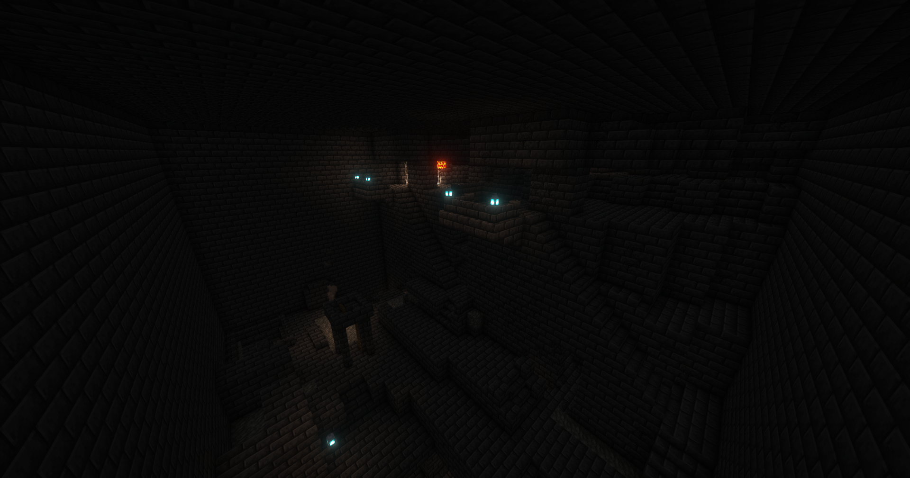
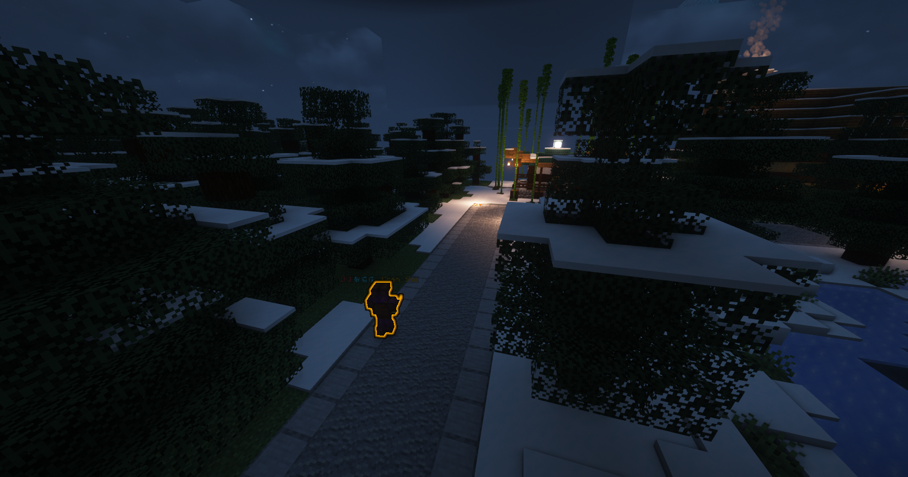
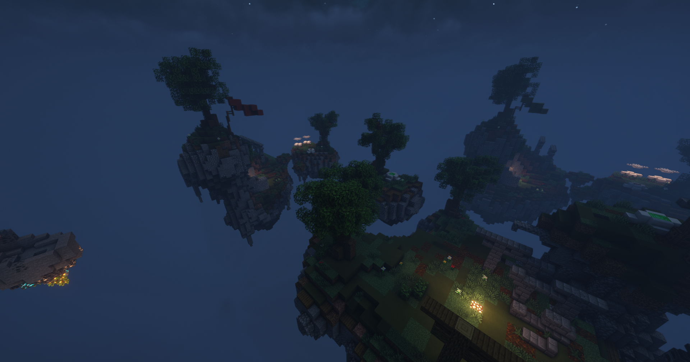
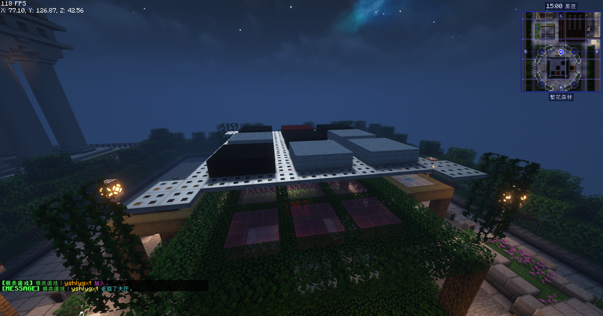
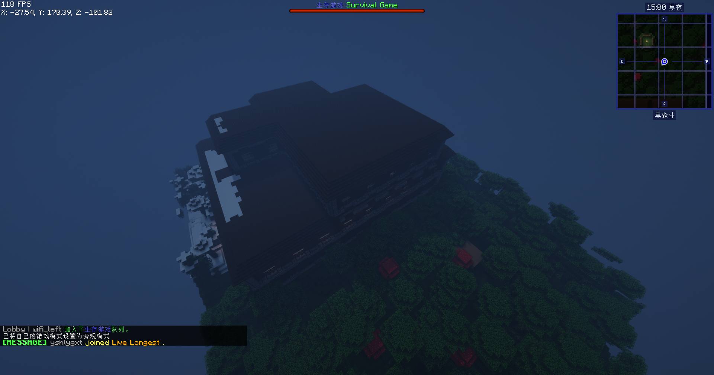
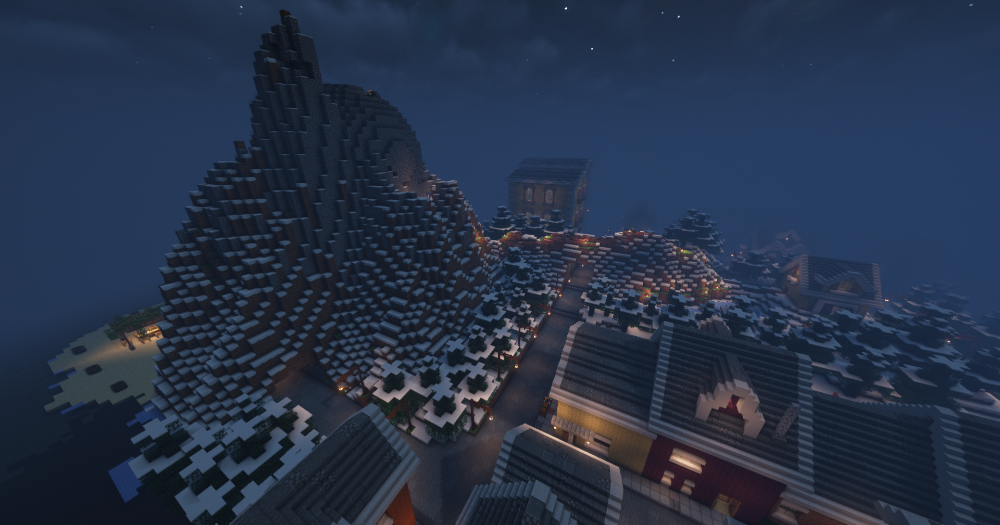
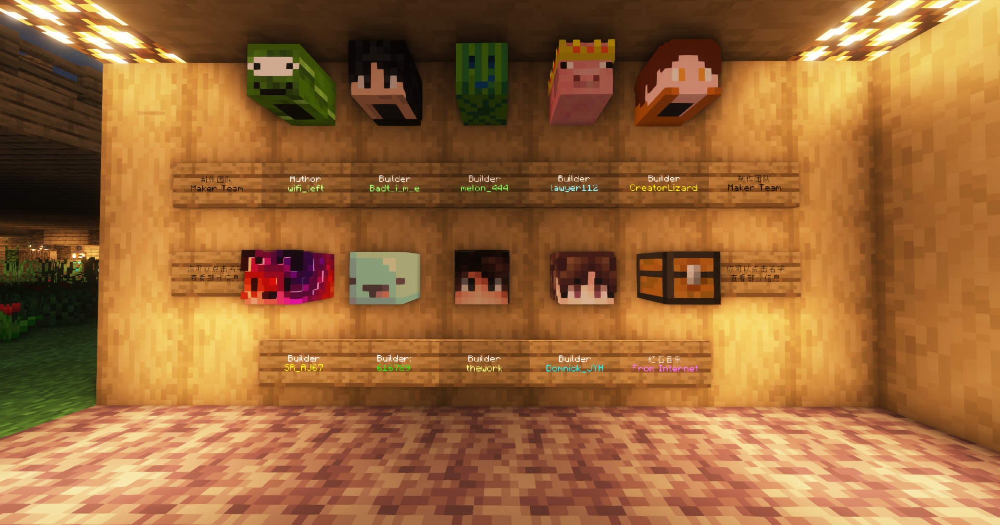
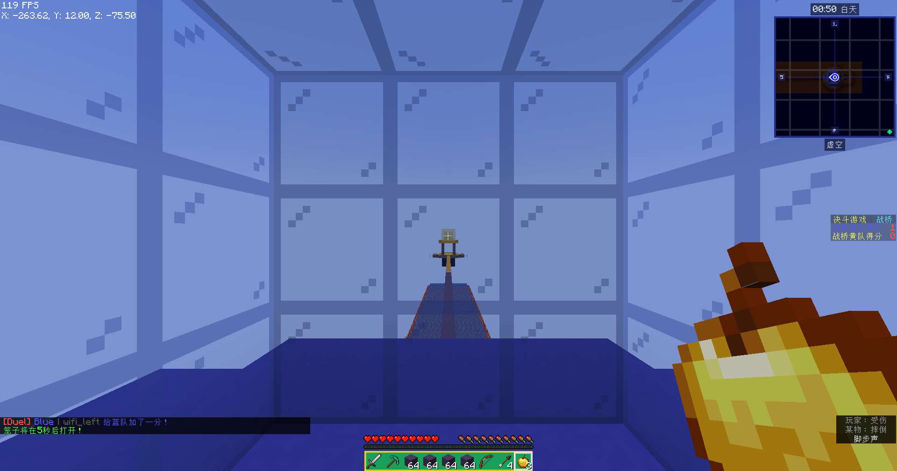
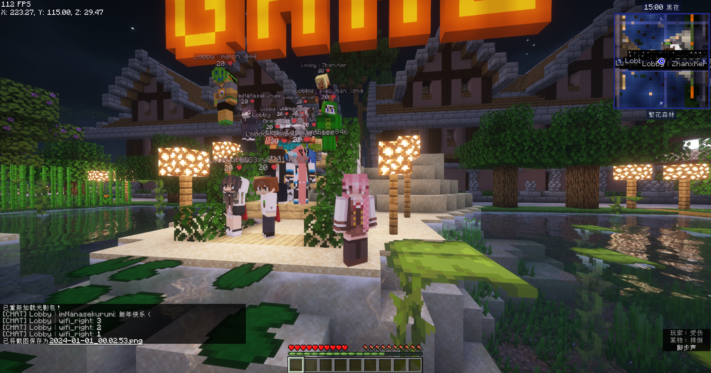
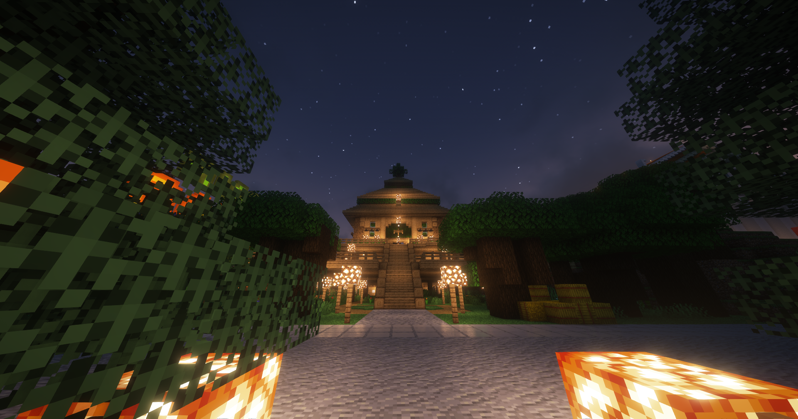
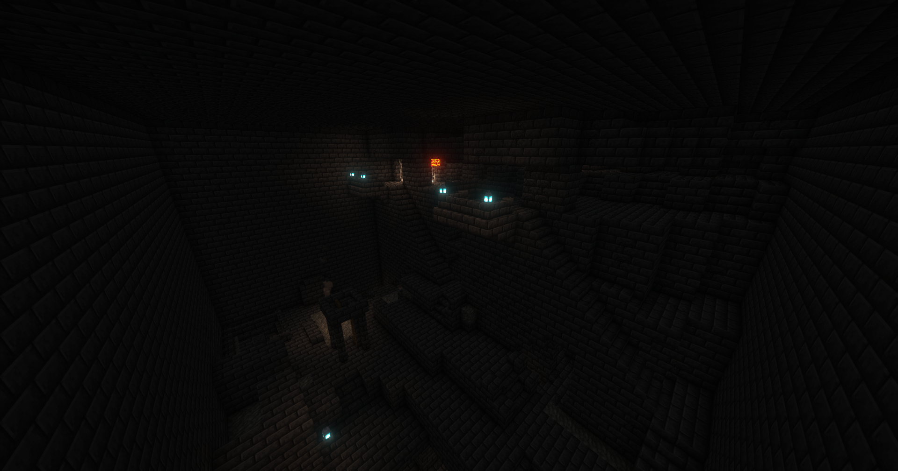
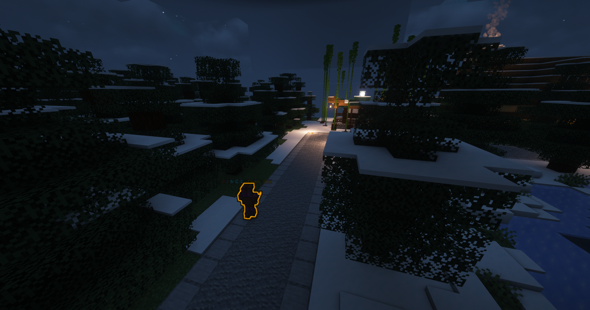
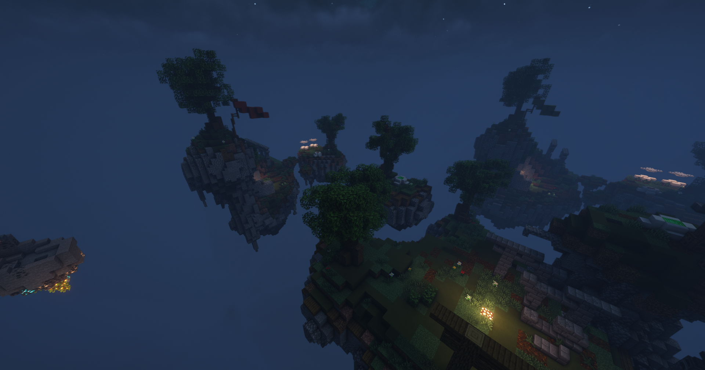
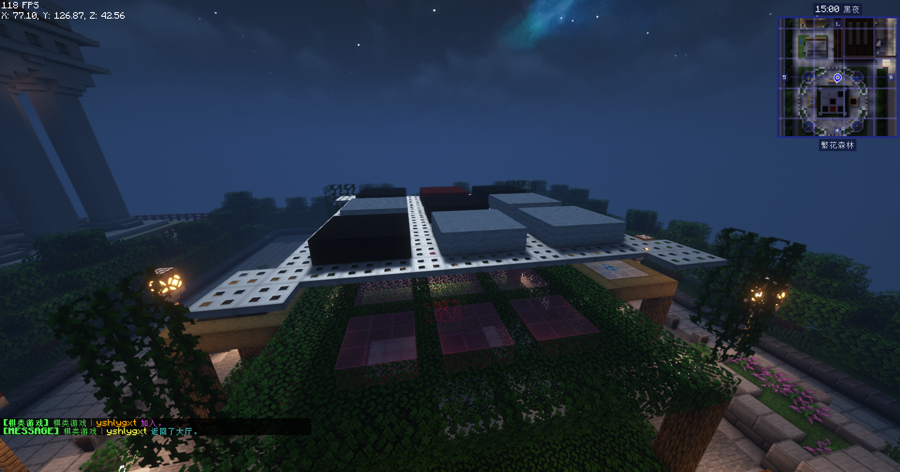
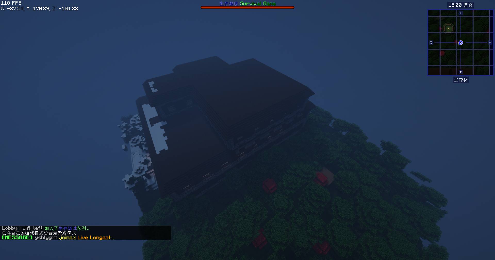
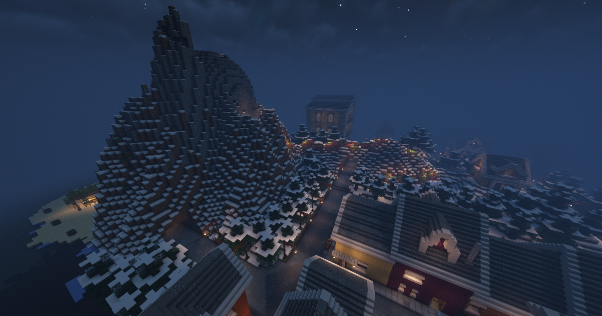
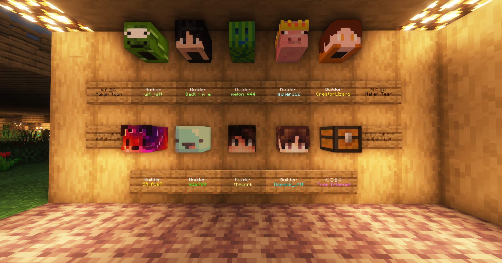
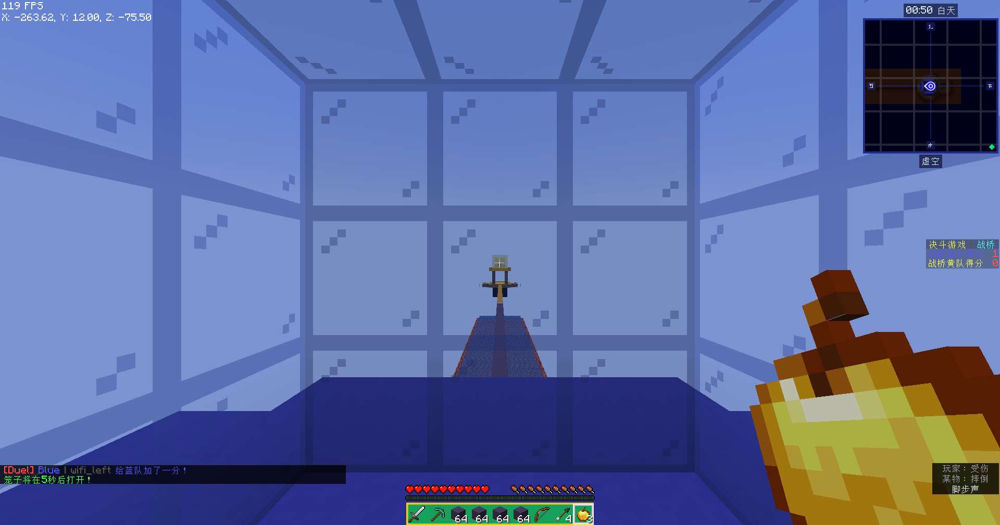
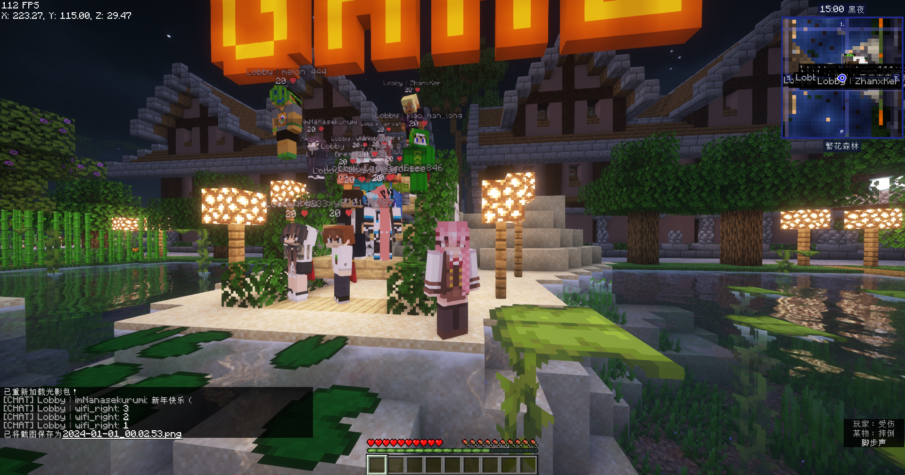
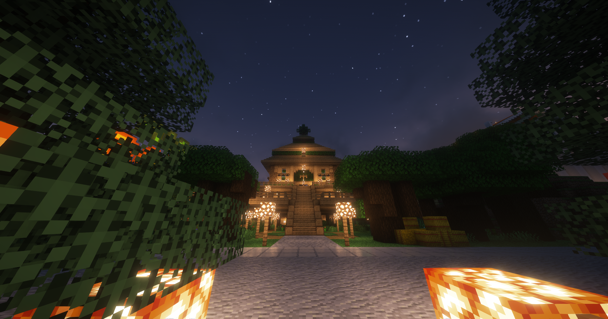
下载地图
地图本体
从 Gitea 下载（推荐）
下载地址：https://gitea.com/wifi-left/Map-MiniGames/archive/master.zip从 GitHub 下载（主仓库）
下载地址： https://github.com/wifi-left/Map-MiniGames/releases/latest地图附加
可选：禁言模组
本模组用来控制玩家禁言，不安装地图也可以正常使用。下载地址：Modrinth链接
资源包
从Gitea下载： https://gitea.com/wifi-left/Map-MiniGames/raw/branch/master/resourcepack/MiniGameRes.zip从GitHub下载： https://github.com/wifi-left/Map-MiniGames/raw/master/resourcepack/MiniGameRes.zip
关于
版权声明
对于一般使用、修改等，只需要标注原作者即可。如果您要商用，您需要向作者本人（联系方式：bilibili）寻求许可。（可能需要支付一定的回报，毕竟制作地图不易，而且还是免费地图，你拿来商用给作者点赞助不过分吧？）
建造团队
主要作者
@wifi_left (wifi_right、Bamboo丶Gamom)B站主页：https://space.bilibili.com/521673619
GitHub主页：https://github.com/wifi-left
其他作者
特别鸣谢：@Domnick_JYH 提供的建筑特别鸣谢：@lawyer112 提供的服务器支持
其余的均在地图中标明！
网页信息
网页：Bamboo丶Gamom引用模块：gQuery.js、font-awesome
网页版本：加载版本号中...
仅提供技术支持